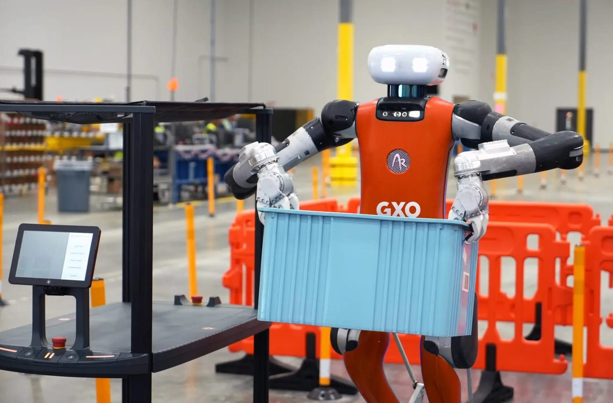

לימדנו את הפלדה לחשוב. עכשיו היא מתחילה לענות.
פורסם במקור ב LinkedIn
לימדנו את הפלדה לחשוב. עכשיו היא מתחילה לענות.
לפני כמה שנים, הרעיון של רובוט בגובה אדם שמבין הקשר, לומד תוך כדי תנועה ומסוגל לעבוד לצדנו, נשמע כמו פרק נוסף ב"בלייד ראנר". עכשיו זה מתחיל להיראות יותר כמו סרט תיעודי.
לא מדובר על יד רובוטית במפעל רכב - אלא על דמויות ניידות, בעלות גפיים, תגובתיות קונטקסטואלית, וגישה לבינה מתפתחת שמבוססת על למידה מהמציאות הפיזית.
במהלך החודשים האחרונים, שורת הכרזות מרמזת שמה שפעם היה "רובוט כללי" הופך למוצר, או לכל הפחות לאב טיפוס שמתחיל ללכלך את הידיים:
Figure נכנסת לשלב אימות של AGI בגוף רובוטי, עם שאיפה לייצר 100,000 יחידות תוך ארבע שנים.
Sanctuary AI מציגה את Phoenix - רובוט שמיועד לעבודה כללית, עם ארכיטקטורה שמתמקדת בזיכרון והיגיון מופשט.
טסלה מדגימה את Optimus מקפל כביסה בדיוק דקסטרי, עם למידת פידבק מהירה מהשטח.
Agility Robotics כבר בונה מפעלים שלמים לרובוטים דמויי-אדם.
ולצדן, Apple Vision Pro מניחה את תשתית החישה - עם מערך חיישנים שמלמד את החדר לראות, עוד לפני שהרובוט נכנס אליו.
אבל הסיפור הגדול יותר לא נמצא רק בטכנולוגיה, אלא בהרגלים החדשים שמתפתחים סביבה.
בעבודה עם רובוטים אנושיים למחצה - במחסנים, במעבדות, אפילו במטבח - אנשים מתחילים להאט תנועה, לדבר בקול רם, לסמן מחוות. לא בגלל שמבקשים מהם - אלא מתוך התאמה טבעית, אינטואיטיבית, לנוכחות חדשה במרחב.
לא כפקודה. כשיתוף פעולה.
לא כאוטומציה. כקולגה.
המהפכה הזאת לא מגיעה באירוע השקה נוצץ, אלא דווקא ברגעים האפורים: בפניית ראש של עובד אנושי, בהיסוס קל לפני פתיחת מגירה, בשאלה אם צריך להסביר לפניקס מה ההבדל בין פחיות תירס ואפונה.
ומה שמעניין הוא לא מה הרובוטים כבר יודעים - אלא איך אנחנו משתנים לידם.
וכמה מהר זה קורה.
